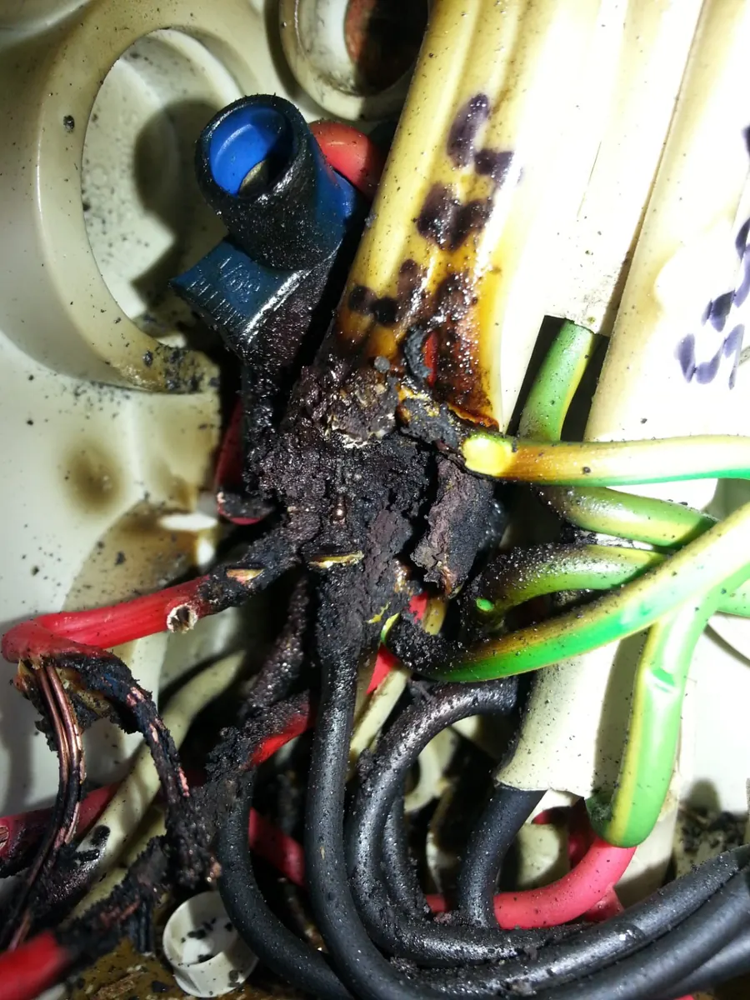
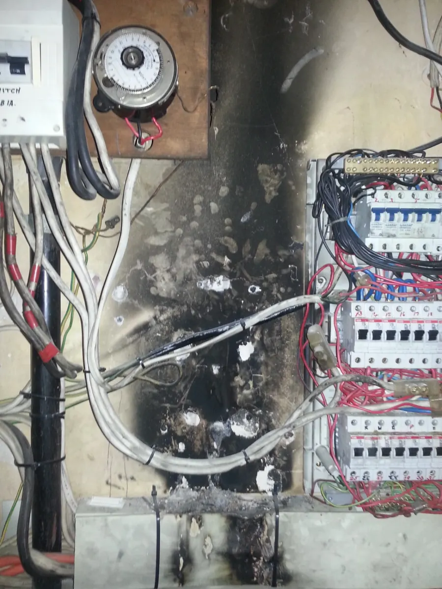
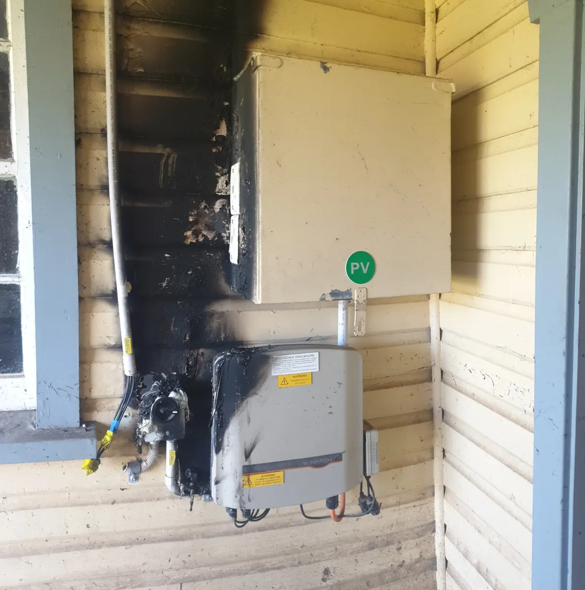

Find the cause before throwing parts at the problem.
Electrical faults can be obvious, intermittent or only appear under certain conditions. The aim is to diagnose the cause methodically, explain what was found and then recommend the most sensible repair.
What this service covers.
Tripping circuits
Investigate circuits that trip RCDs or circuit breakers and narrow the problem to the affected circuit, appliance or installation.
Intermittent faults
Track problems that appear and disappear rather than simply resetting and hoping they stay away.
Lost power
Diagnose dead powerpoints, lighting circuits or sections of an installation that have stopped working.
Repair planning
Once the fault is understood, explain the repair options and the next practical step.
What real faults can look like.
Electrical faults range from subtle intermittent problems to obvious heat damage. These images are genuine work photos; specific project details will only be attached where confirmed.



Common questions.
My safety switch keeps tripping. Can you find out why?
Yes. Repeated tripping is exactly the sort of issue fault finding is intended to diagnose. The cause can sit in the circuit, connected equipment or elsewhere in the installation.
Should I keep resetting a breaker that trips?
If it continues to trip, stop repeatedly resetting it and arrange an electrical assessment. A protective device is operating for a reason.
Can I send photos before the visit?
Yes. Photos of the switchboard, affected equipment and surrounding installation can be useful when assessing the likely job.
Fault Finding & Electrical Repairs across Byron Bay and nearby Northern Rivers.
This service is available across the main Berryman Electrical service area, including the locations below.